Artists
ARTIST TALK
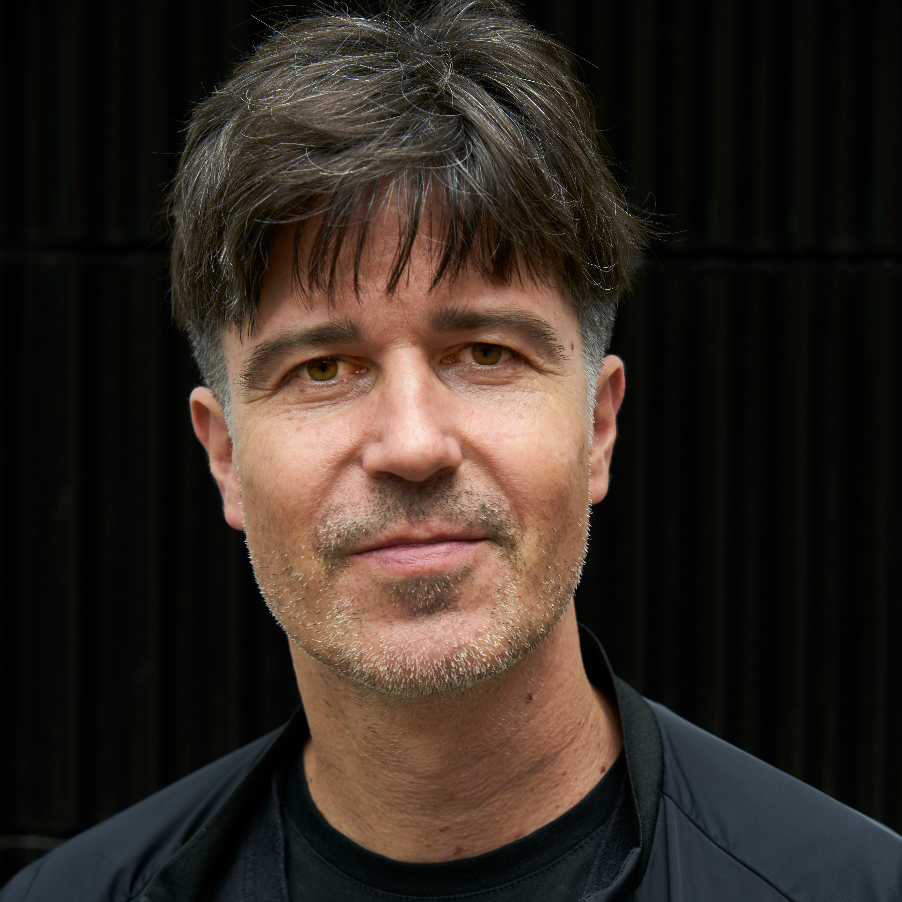
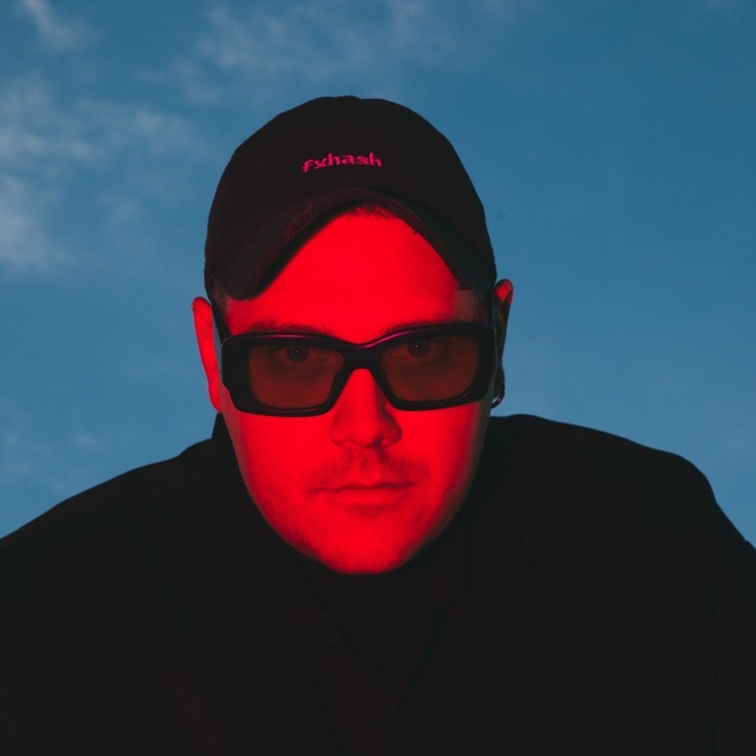
Heiko Schmid, Ugo Pecoraio (KUNSTSURFER)
Ugo Pecoraio is a curator, advisor and strategist working at the intersection of digital culture, institutional critique and cross-disciplinary practice — spanning technology, design, activism and subculture. Understands art institutions as dynamic ecosystems connecting artists, communities and the public, and advocates for exhibition spaces built on radical hospitality and genuine participation. Dr. Heiko Schmid is an art historian, curator and author based in Zurich. His research and curatorial work focuses on media art and digital culture, cultural history of technological and the science fiction genre, posthumanism, contemporary comics, and outer space as a site of technocultural imagination. Through his combined academic and curatorial practice, he connects historical scholarship with speculative and future-oriented approaches to art, media, and technology.
What Happens When Ads Become Art? A conversation with Heiko Schmid and Ugo Pecoraio about parasites, browser defences, and the wish to make the internet a more exciting space for art.
Creative ad-blockers are nothing new: some replace advertising with kittens, others with abstract patterns. What KUNSTSURFER adds is curation. It adds selected artistic positions that actively engage with, and respond to, the specific context of a browser add-on, turning advertising space into curated online exhibitions. The talk centres on the curatorial questions this situation raises: What does it mean to show art inside a commercial space you do not control? What does it further do to our perception when we no longer know what is content, what is an ad the add-on missed, and what is art? Heiko Schmid and Ugo Pecoraio offer insights into KUNSTSURFERS curatorial framework underlying its functionality.
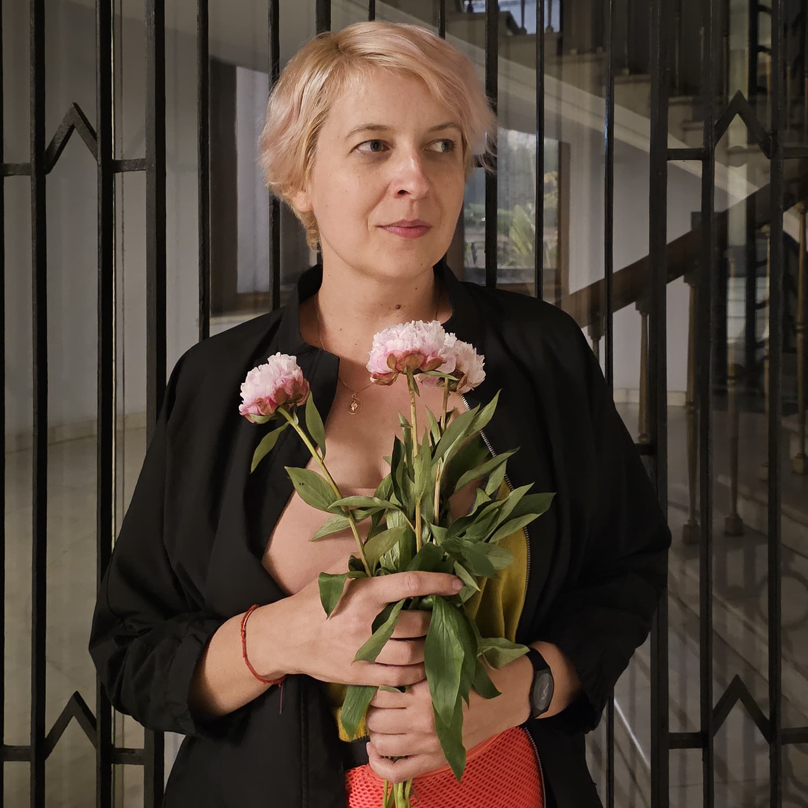
Monika Masłoń
Monika Masłoń is an artist working at the intersection of experimental film and digital media. She graduated from the Academy of Fine Arts and holds a Ph.D. from the Łódź Film School. Her work focuses on embodied encounters, intersubjective presence, and mediated intimacy, translating emotional states into audiovisual and immersive forms including film, VR, and installations. She is the author of Four Percent, a documentary filmed entirely within VRChat,and the VR experience Control Negative.
„Can I hold your hand?” Notes from working on Four Percent
What happens to the body when we put on a VR headset? What is the experience of touch made of when there is no physical contact? What role is played by the device, the avatar, spatial sound, and the habits we carry into the virtual world? And how much of this can be passed on to a viewer? These questions stayed with me while I was working on Four Percent, a documentary shot entirely in VRChat. The film was made as artistic research, in which I was both an observer and a participant. The headset, a camera on my head, recorded what I was going through. In the edit I could look back from a distance at what I had lived, and see how we feel another person's closeness when we are far apart. In this talk I will share my observations and try to name the layers that touch is made of in virtual reality.
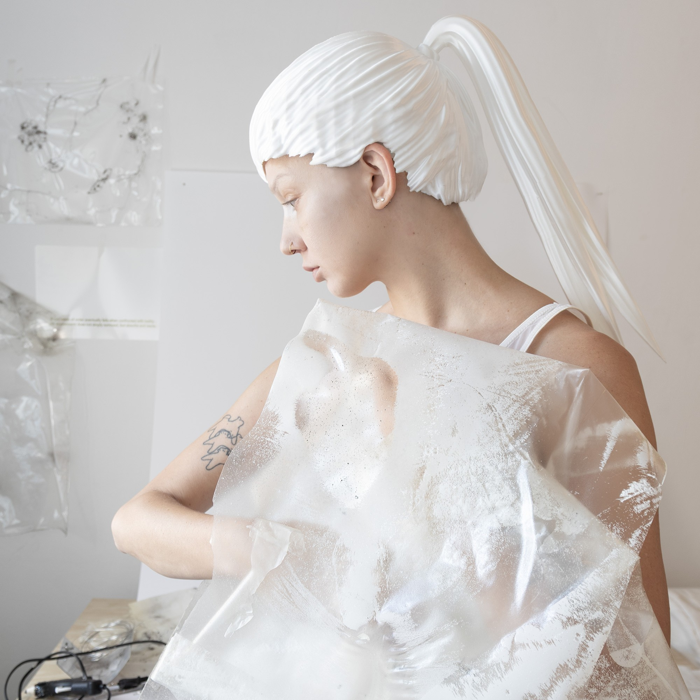
Iza Koczanowska
Iza Koczanowska is an artist, researcher, and interior architect based between Amsterdam and Warsaw. Expanding architecture beyond the human, she sees space as an opaque web of more-than-human beings, matter, and landscape. From site-responsive fieldwork she builds speculative installations of sound, biomaterials, and technology that trace extraction and mass tourism, renegotiate relations with place, and satirise anthropocentric triumph. She holds an MA cum laude from the Piet Zwart Institute.
Post-turystyka przez pryzmat praktyk cyfrowych
During the artist talk, Iza Koczanowska will discuss the use of digital and technological tools to critically engage with post-tourism. The starting point will be Ugly Beach (2025), presented at the Nieuwe Instituut in Rotterdam. This research-based installation approaches the beach not as an idealised paradise, but as a contested landscape shaped by tourism, unequal access, and ecological instability. It was inspired by unusual yellow sea foam encountered on the coast of The Hague, treated as both material and metaphor for what resists polished aesthetics and commodification. The artist will show how 3D scans and Unreal Engine were used to create a prototype VR environment and a gamepad-controlled game, as well as elements of the installation, which combines agar, seawater, foam, and 3D prints with video and sound.
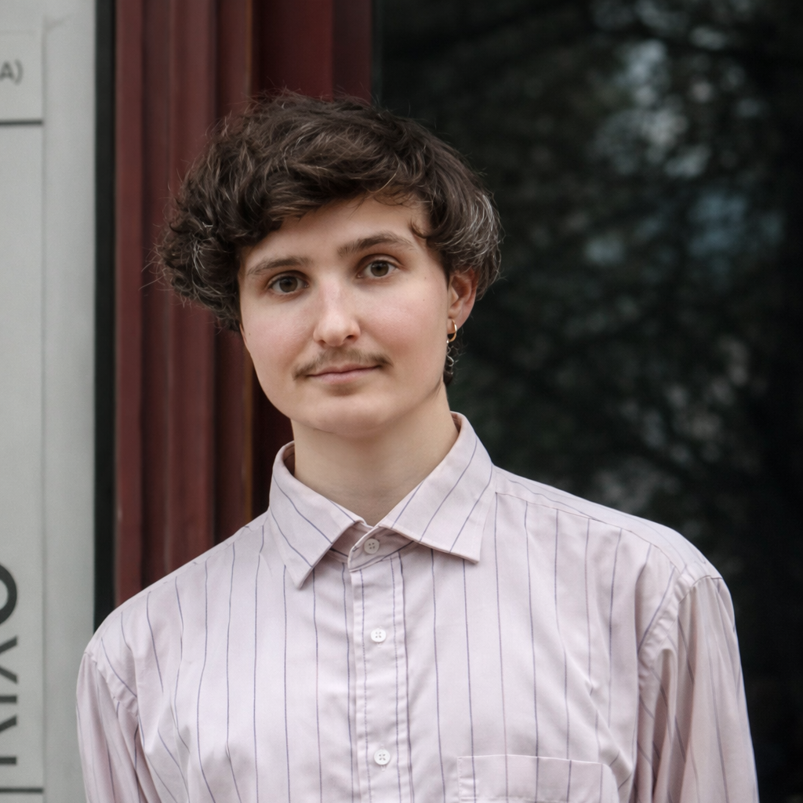
Oleksandr Sirous
Oleksandr Sirous (b. 1996, Kharkiv) is a Ukrainian sound and media artist working with interactive simulations, game engines and sculptural interfaces. With a background in animation and classical art, he explores how technologies reshape territories, perception and relations between human and nonhuman actors. His practice includes collaborative work with Photinus Studio and the ongoing research project LIMEN.
LIMEN: Learning to See Through Other Bodies
How does a landscape change when we encounter it through the body of a robot? Ukrainian media artist Oleksandr Sirous introduces LIMEN, an ongoing artistic research project combining interactive simulations, sculptural interfaces and game mechanics. Drawing on territories shaped by war, restricted access and abandoned infrastructure, the project explores encounters between machines, living organisms and the traces of human control. Its robotic explorers navigate partial maps, unreliable signals and environments that resist a single interpretation. Sirous will discuss how research becomes a simulated world, and how small handheld devices turn observation into a relationship of care, dependence and responsibility. The talk asks what remains of human intentions when technologies enter other ecologies, and how an interface can let us inhabit that uncertainty.
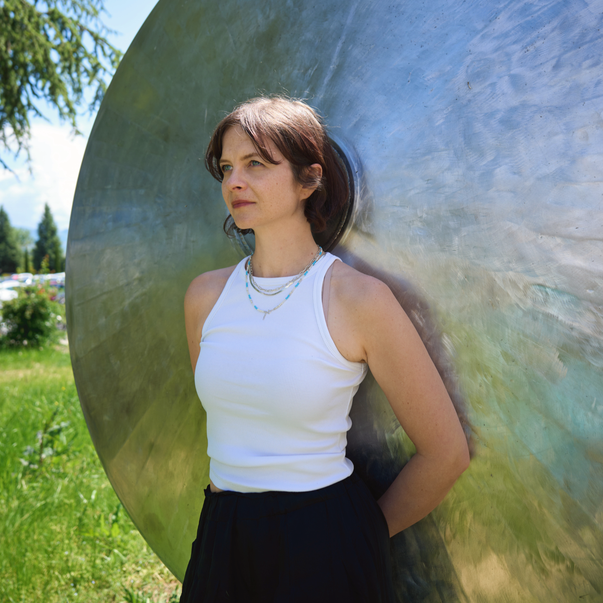
Martyna Marciniak
Martyna Marciniak’s practice bridges media theory, and legal imaginaries to trace how power inscribes itself through image regimes and visual infrastructures. Often revisiting historical events, her work (oscillating between sculpture, video and animation) engages in a form of pataforensics: poking at the tropes of scientific and forensic aesthetics, revealing their uncertainties, contradictions and lapses. Her work has been shown by Onassis Stegi, Copenhagen Contemporary, Ars Electronica (for which she recieved award the project ‘Anatomy of Non-Fact’), Aksioma, Warsaw Biennale, LABoral Centro de Arte, among others.
Speed and Disappearance: On the Materiality of Computational Time
How do technological systems transform images, information and human labour? What disappears as information travels below the threshold of perceptible speed? What happens when images circulate before they can be verified? From a physicalised version of the Balenciaga Pope’s jacket, to examining Sims as the symptom and source of the risk culture, to dissecting high speed data ingestion and processing at CERN, Speed and Disappearance connects my recent projects to trace the strange ways computational speeds shape our visual culture, understanding of reality and create a new temporal cultural condition. Moving between forensic investigations, material translations of digital artifacts and kinetic sculptures, the talk follows the material consequences of computation from the cultural afterlives of synthetic images to the absurd mechanical choreographies of machines waiting for an anomaly.
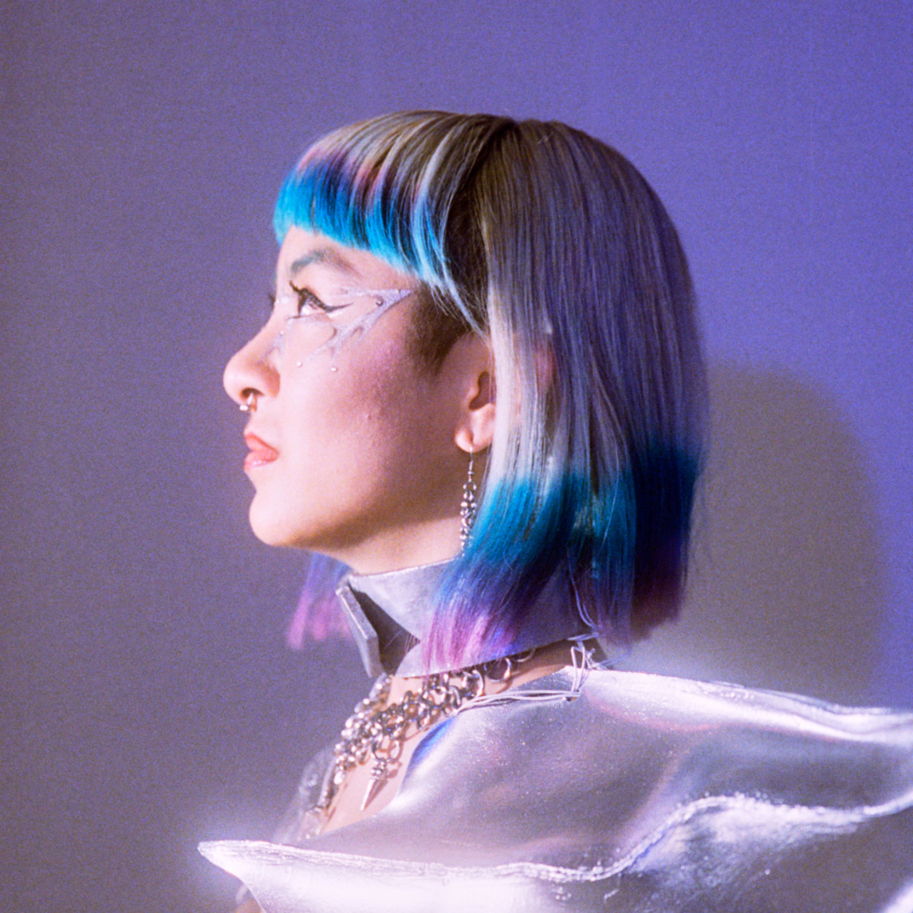
Senaida
SENAIDA (b. 2002) is a Hakka Chinese-Canadian transdisciplinary artist, sound healer, researcher and curator, whose work embodies an exploration of the intersections between shamanism, posthumanism, generative art, interaction design, and sustainability. As a sound architect, international dj, and creative entrepreneur, SENAIDA crafts liminal collective experiences that redefine the boundaries of sound art and technology. Their work has been featured in Berlin Art Week, LA Art Show, CTM Festival, Cannes Next Film Festival, NYC Media Lab among others.
Guest People, Living Archives: The Hakka Futurist Manifesto
In this talk, Berlin-based artist Senaida Ng presents The Hakka Futurist Manifesto, a framework for imagining diasporic futures through sound, archives and technology. Hakka (客家) translates as "guest people": a culture shaped by centuries of migration and now spread across Asia, the Indian Ocean, the Caribbean and the Americas. Ng begins with Hakka history and the role of sound within it, from mountain songs to language as a portable homeland. They will then shows how archival work can build global networks, drawing on their MA thesis research, their mix "Hakka Means Guest People" featuring interviews with Hakka diaspora, a growing online database of diasporic stories, and their visits to Hakka communities in Indonesia, Hong Kong, Taiwan and India. Finally, Ng proposes an Ancestral AI: a living library through which diasporic communities can hold, share and pass on their own stories, raising questions of consent, memory and who gets to speak for the ancestors.
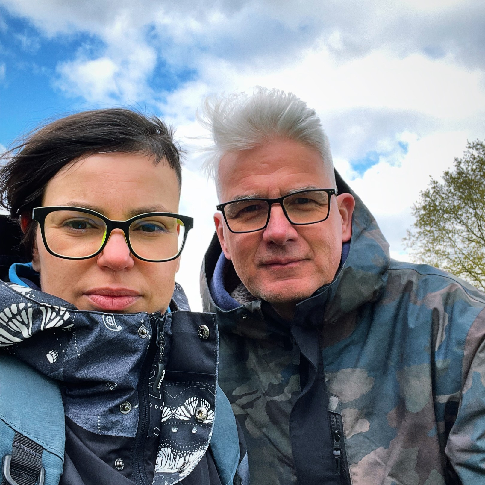
Albena Baeva i Renee Beekman (Gallery Gallery)
Albena Baeva and Rene Beekman are digital artists and curators based in Sofia. Together they create artworks, curate exhibitions, organise events focused on interactive and digital art. They are co-founders of gallery Gallery, the first gallery for digital art in Bulgaria, the studio for interactive design Reaktiv, and Symbiomatter: experimental arts lab. Albena Baeva is at the forefront of interactive art in Bulgaria. Her works have been shown in museums for contemporary art, galleries and festivals for video and performance in Europe, Turkey, and the USA., and since 2020 are part of the Art Collection Telekom. Rene Beekman’s work has been shown in locations such as the Stedelijk Museum, Art Amsterdam, Kunst RAI and de IJsbreker in Amsterdam, het Appollohuis in Eindhoven, the Kitchen in New York, and the Städtische Museen Jena among others. He co-founded the MA program for Digital Arts at the National Academy of Arts in Sofia, where he taught for 8 years, as well as festivals like xfilm Festival, xfilm lectures, and DA Fest among others.
It Is Easier to Apologize: Guerrilla Tactics as a Curatorial Form
On a children’s playground in Sofia, between the swings and the Registry Agency, there is a sculpture park. No one approved it, yet it has been open around the clock for five years. This talk takes Rear Admiral and early computer developer Grace Hopper’s well-known line that it is easier to apologize than to ask permission as a starting point to guerrilla tactics as a deliberate curatorial method rather than a workaround.
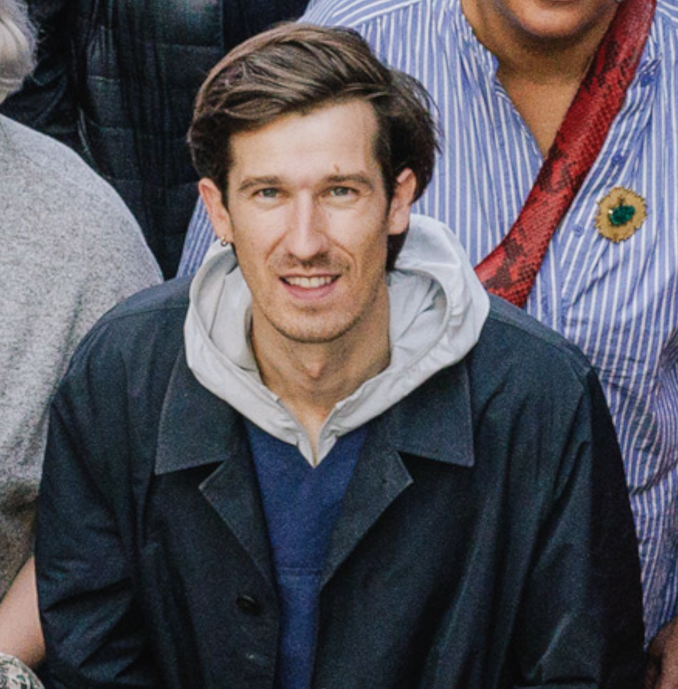
Simon Weckert
🆂𝗂𝗆𝗈𝓃 ᵂє𝐜𝐤𝐞ⓡᎢ, a 𝔪ᵒᗪ𝐞𝓻ɴ-day 𝕯𝐢𝐠ιⓉ𝒶𝓵 wizard & playfull tinker, works in a 𝓭𝒾𝓰𝒾𝓉𝒶𝓁 𝔀𝓸𝓻𝓵𝓭' where 𝖈ø𝗱𝖾 & 𝕔𝕚𝕣𝕔𝕦𝕚𝕥𝕤 ≠ just tools, but ironic statements. He combines:☷ Tech, Art, & cheeky critique , unraveling 🜂𝖈𝕠𝕞𝕡𝕝𝕖𝕩 issues that make us , , or scratch 🅷🅴🅳🆂. °❀⋆.ೃ࿔*:･
Machine (Un)learning by Simon Weckert
What happens when AI systems are no longer just used — but actively challenged? In this Artist Talk, Simon Weckert shares insights into his practice of "machine unlearning": an approach that doesn't accept the logic of algorithmic systems, but subverts it. At the core is a deceptively simple question: how can the invisible rules and assumptions encoded into AI models be made visible — and deliberately undermined? Weckert shows how creative hacking of AI systems opens up new aesthetic spaces while raising critical questions about bias, control, and digital power.
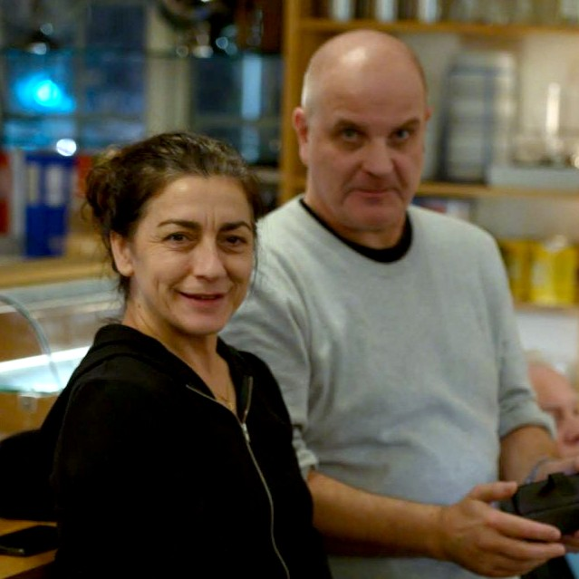
Maite Cajaraville, Gisle Frøysland (PIKSEL Festival)
PIKSEL is an international festival and platform for electronic art and free/libre technologies based in Bergen, Norway. Founded in 2003, it brings together artists, developers and audiences through exhibitions, live performances, workshops and collaborative research. PIKSEL explores the artistic, social and political possibilities of open technologies, fostering experimentation, knowledge sharing and critical engagement with the systems that shape our lives. Maite Cajaraville is a Spanish multidisciplinary media artist based in Bergen, Norway. Her practice spans electronic art, audiovisual performance and installation, exploring relationships between technologies, territories and collective agency. She is co-curator and co-director of PIKSEL Festival and a member of NSA Collective with Gisle Frøysland. Gisle Frøysland is an artist and artistic director of PIKSEL, the international festival for electronic art and free/libre technologies in Bergen, Norway. His work connects artistic experimentation with open technologies and collaborative practices. Together with Maite Cajaraville, he forms NSA Collective.
Artistic Interventions and Speculative Science Fiction: Reimagining Collective and Ecological Futures
What does care mean when we think about territories? Through two artistic projects, Solar4Rain and Adoquines del Guadiana / Brostein for (De)Konstruksjon Av Kampsonen, we explore relationships between technologies, resources, humans and non-humans. Solar4Rain, an atmospheric PUNK symbiosis, approaches care as ecological reciprocity: can water, sunlight and other natural resources be shared commons, and can technology respond to ecological needs rather than extraction, ownership and profit? Adoquines del Guadiana approaches care as collective responsibility: who decides how a territory is transformed, and how can communities negotiate the conflicting interests of governments, companies and infrastructures? Together, the projects invite us to rethink how we share resources, inhabit landscapes and take responsibility for the places we transform.
EXHIBITIONS
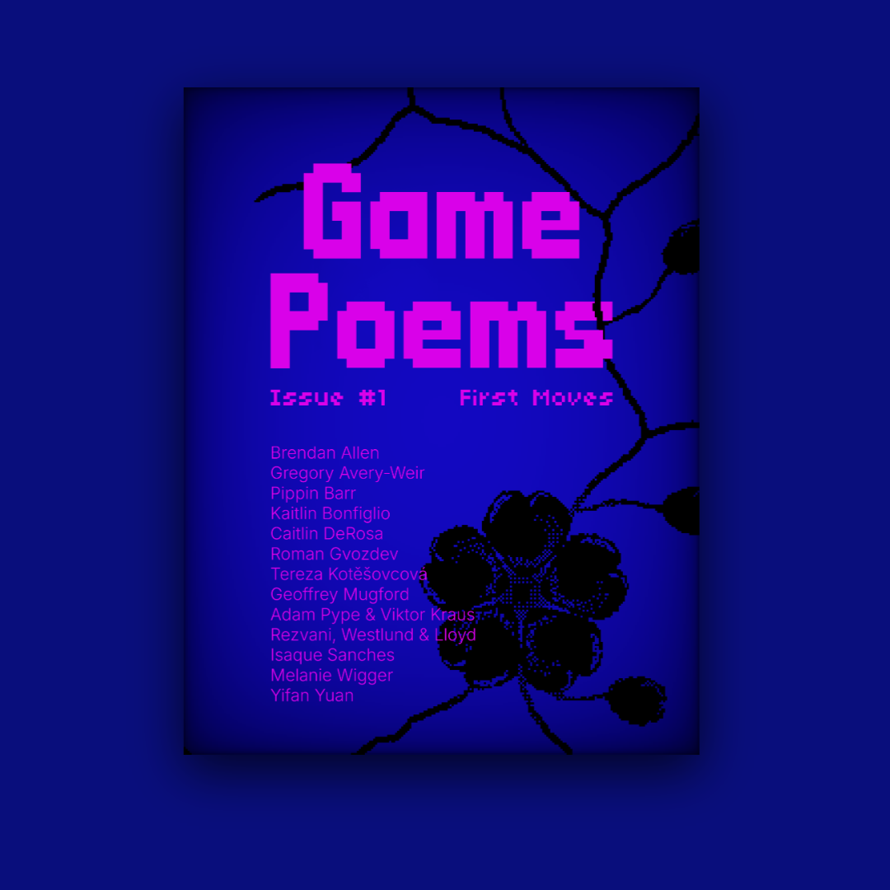
Game Poems
Game Poems, Issue #1: First Moves
Game Poems, Issue #1: First Moves is a playable magazine created to highlight the poetic potential of short-form videogames and explore unusual modes of authoring and framing play-based experiences. Rather than a compilation of standalone games, the issue is designed to be seen as an authored experience in which multiple short works function together within a shared framing device to challenge and push out conceptions of how videogames might be experienced, and what they are for. Developed through an open call and peer review process, Issue #1 brings together thirteen short experimental videogames by an international group of artists, poets, scholars, and game designers. Each contribution was created in dialogue with a shared theme and editorial framework, and is presented within a custom interface that shapes how the works are encountered, read, and played.
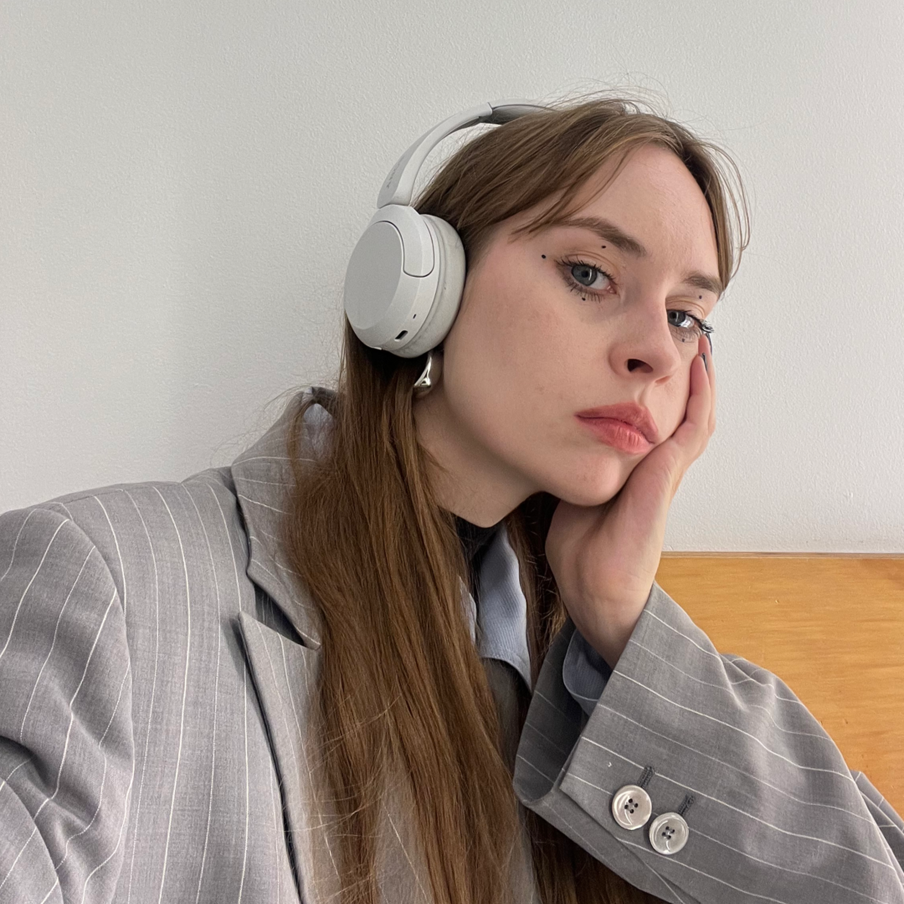
Adrianna Makowska
A designer from Bytom, Poland, who combines art with creating solutions that positively impact people’s everyday lives. A web designer by profession and an illustrator in her free time, she works under the pseudonym Lolada. Her signature style features exaggerated, colorful characters caught in moments of awkward hesitation between “oops” and “just pretend nothing happened.”Her work has been exhibited at numerous exhibitions in Poland and abroad, including in France, Canada, Turkey, and the United Kingdom. She graduated from the Academy of Fine Arts in Katowice, where she studied design, visual information systems, and interaction design. A sudoku enthusiast and lover of long walks.
Self: Updating
A digital manifesto presented as a tool for accelerating the acquisition of new workplace skills. It addresses the observed crisis of work, questioning the growing pressure to compete with rapidly advancing artificial intelligence and the need for continuous self-education in the post-work era. How can we maintain a sense of self-worth in a world of work increasingly shaped by technology? The project encourages reflection on the relationship between humans, work, and AI, highlighting that rest, care, and acceptance of our own limitations are just as important to professional growth as efficiency and the acquisition of new skills.
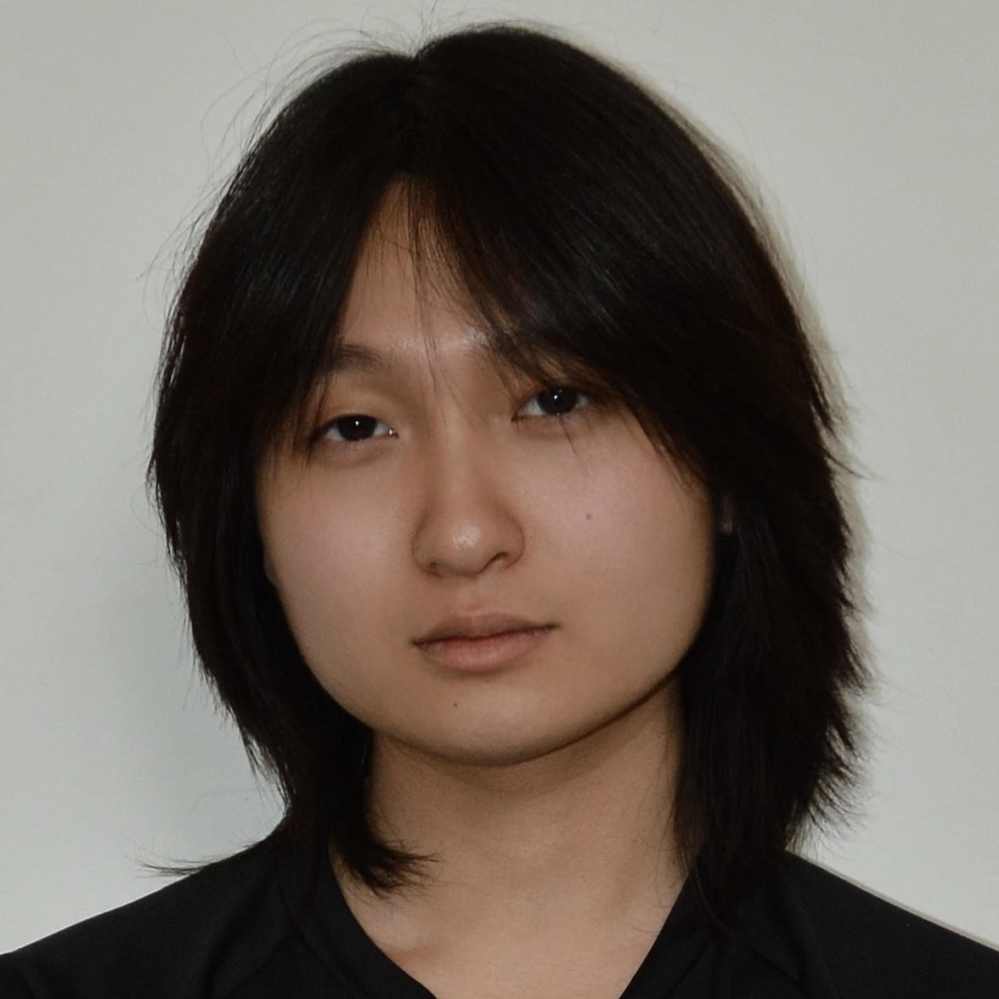
Shibai Tang
Shibai Tang is a Chinese artist born and raised in Dubai, UAE, and currently based in France. His practice spans sculpture, installation, electronics, robotics, and digital technologies. Using self-built mechanisms, salvaged electronics and technologies, he explores how technological and media systems shape perception, memory, and our relationship to the contemporary world.
Please Scan All Items Before Proceeding to Payment
Please scan all items before proceeding to payment — peace is an interactive installation composed of ten resin pinky fingers, each individually sealed in transparent PVC packaging and displayed like a product in a store. Each finger can be scanned with a barcode reader, revealing a different form of media or interaction: text, sound, image, video, silence, and/or digital content. The work begins with a simple question: what is the strangest thing humanity has turned into a commodity? The answer is the promise. Political commitments, environmental pledges, treaties, ceasefires, and declarations of peace are made, exchanged, and circulated, yet often postponed, diluted, or abandoned. The pinky promise, perhaps the most innocent form of human commitment, becomes a lens through which to consider these larger agreements. There is only one pinky in each package; the other belongs to the consumer. The promise can only be completed when someone reaches back. Each scan reveals a promise. Each promise carries a cost.
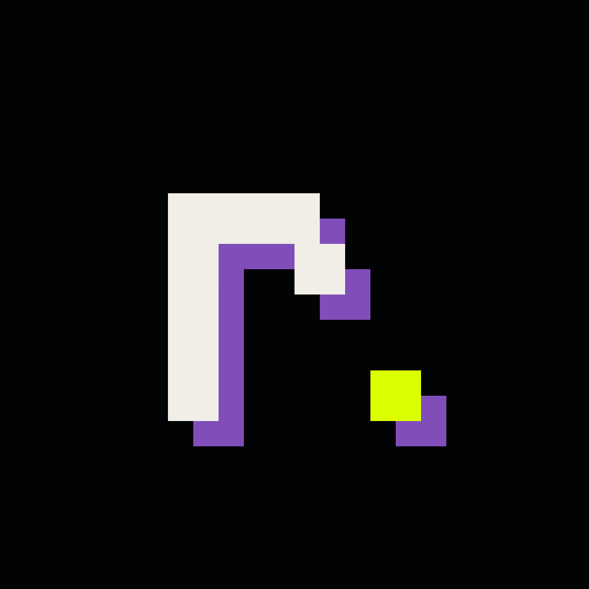
Szkarpaty
szkarpaty works at the intersection of net art, experimental poetry and digital literature, using the browser as his medium. He runs rzękulec., an interactive diary in the form of a listening station at sea, where he examines his former self by fishing out fragments of his own archive of nearly 750 entries from 2018-2023. His work touches on growth and everyday struggle, the relationship between human and machine, and the relationship with you, the reader. He publishes under a pseudonym.
Rzękulec
rzękulec. is an interactive diary that cannot be read passively. Built as a listening station at sea, it picks up transmissions from different depths in the browser. Some are read by acting, some are audiovisual, some are a fresh look at a former self. In “spalone kartki” fire consumes the notes, and the reader decides whether to save them or lose them for good. “dwa okna.” opens in two browser windows that can finish their conversation only side by side. In “cyklosfera” every answer leaves something behind on the rim, and in “ślad.” the story of one night moves on only while the reader holds a button. At the bottom waits “twoje miejsce.”, a digital ambient room where Bartuś the goldfish keeps you company. The reader's gestures and choices decide, and the station remembers. Entries can be explored in any order. Sound is generated live, with no audio files, cookies or accounts. At INTER:AKT the station runs offline; otherwise it broadcasts at rzekulec.pl.
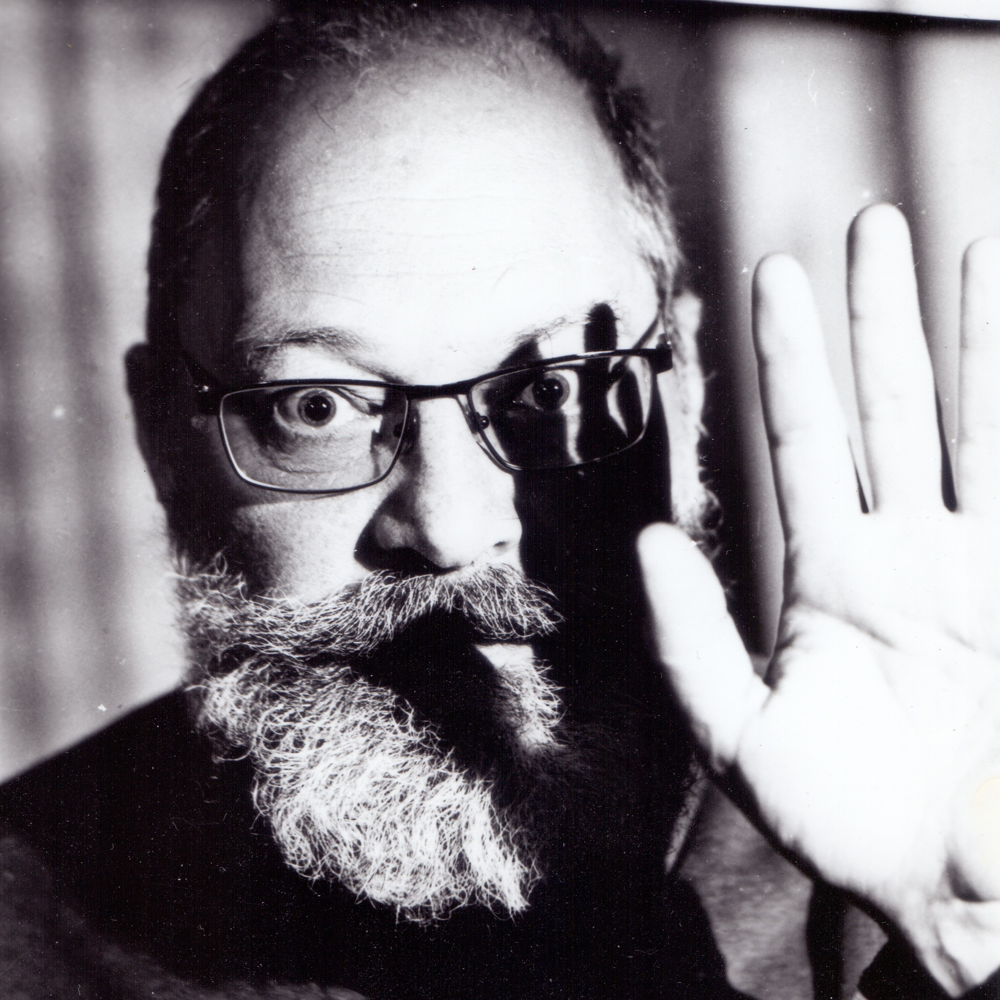
Neno Belchev (Gallery Gallery)
Neno Belchev was born in 1971 in Varna, where he lives and works. He graduated in Mural Painting from the National Academy of Art. Belchev works as video artist and filmmaker as well as in the fields of performance, installation, sculpture, new media. He has made one full-length non-movie (2016), four medium-length documentaries and numerous short narrative films and video art works, which won awards from international videoart and film festivals in Italy, Malaysia, India, Romania, the United States, Russia, the Netherlands, Spain and Austria, as well as artist-in-residency grants in Spain, the United States, Russia, China, Japan, France, Portugal and Bulgaria.
The Yo-yo of God
The Yo-yo of God by Neno Belchev is an AR sculpture that depicts 'Fat Man' the atom bomb, as a yo-yo toy, attached to Christ's hand in the gesture of blessing to create a single gesture that unites divine blessing and total annihilation. Like a modern-day Sword of Damocles, the work alludes to the ever-present and imminent danger posed by those who wield power, knowledge and technological skills in the name of their god.
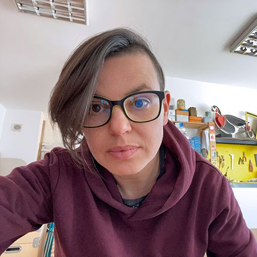
Albena Baeva (Gallery Gallery)
Albena Baeva is at the forefront of interactive art in Bulgaria. She works with artificial intelligence (AI), physical computing, creative coding, and augmented reality, pushing for a feminist discourse in tech-art. As a co-founder of the first gallery for digital art in Bulgaria - Gallery Gallery and its AR sculpture parks in Sofia, Varna, and Berlin she presents and supports other artists in the development of their experimental projects. Her works have been shown internationally at festivals, galleries, and museums in Europe, Turkey and the USA and recently became part of the Art Collection Telekom.
When I Dream I Fly, I Swim
A female swimmer moves through the air above us. As if water has shifted, disappeared, or taken over the world. In this augmented reality work, Albena Baeva places a fully clothed swimmer above the audience, anchored to the QR code of Gallery Gallery on a humble house for stray cats. A surreal image of a changing biosphere, where survival means adapting, persisting, and caring for more than just ourselves. There is no fear in the woman’s swimming in When I Dream I Fly, I Swim. If anything, her calm but regular motion shows determination, an innate resilience or stubbornness to fight one’s fate. A quiet climate warning — and a dream of radical, cross-species empathy.
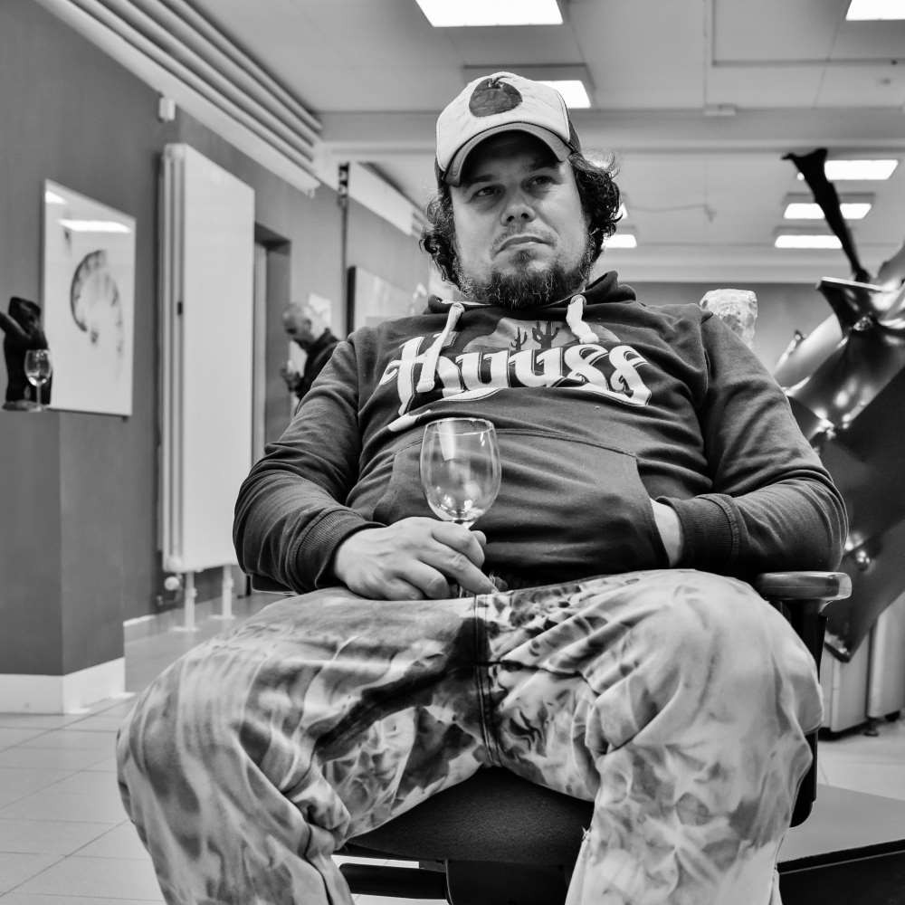
Link (Gallery Gallery)
Marc-Oliver Pospiech (aka Link; born in Berlin in 1976) is a visual artist who studied Fine Arts at the Muthesius University of Fine Arts and Design in Kiel, where he earned his Master of Fine Arts in 2012. He lives and works in Berlin. His multidisciplinary practice combines painting, sculpture, installation, and stage design, exploring signs, perception, and communication. Alongside his artistic practice, he works as a curator with the Neue Kunst Initiative Marzahn-Hellersdorf and the Projektraum Galerie M.
Scam
“Trust me” is what every QR code tells us. Just scan the code and get access, take advantage of this special offer or find out what makes our product special. Scam by Link (not their real name) reminds us that convenience comes at a price. All you wanted was to see the artwork. A quick scan, one click, it looked so easy and reliable. But now the artist has what they wanted.
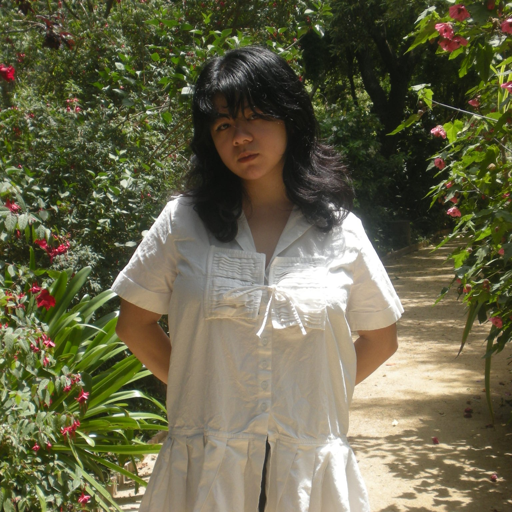
Chia Amisola
Chia Amisola is a tech worker from the Philippines. They're devoted to the internet's loss, love, labor, and liberation, particularly of the third world experience. They make work about intimacy, infrastructure, and infinity across text, websites, and performances. https://everythingi.love/
Arkipelago, Ark 1
Arkipelago reimagines the “second creation” mythologies of the Philippines, in which a world emerges from primordial material—here, the computer interface. In Ark 1, figures move slowly through desktop landscapes inspired by Filipino social realist painting, evoking everyday agricultural life and the domestic amidst disaster. Composed of websites built with handcoded software, generative processes, and live manipulation of the desktop, the work transforms browser windows into an unfolding world. Recorded and recomposed from the artist’s screen, creation becomes an active, continuous performance: a world sustained and renewed through the gestures of its maker.
PERFORMANCE
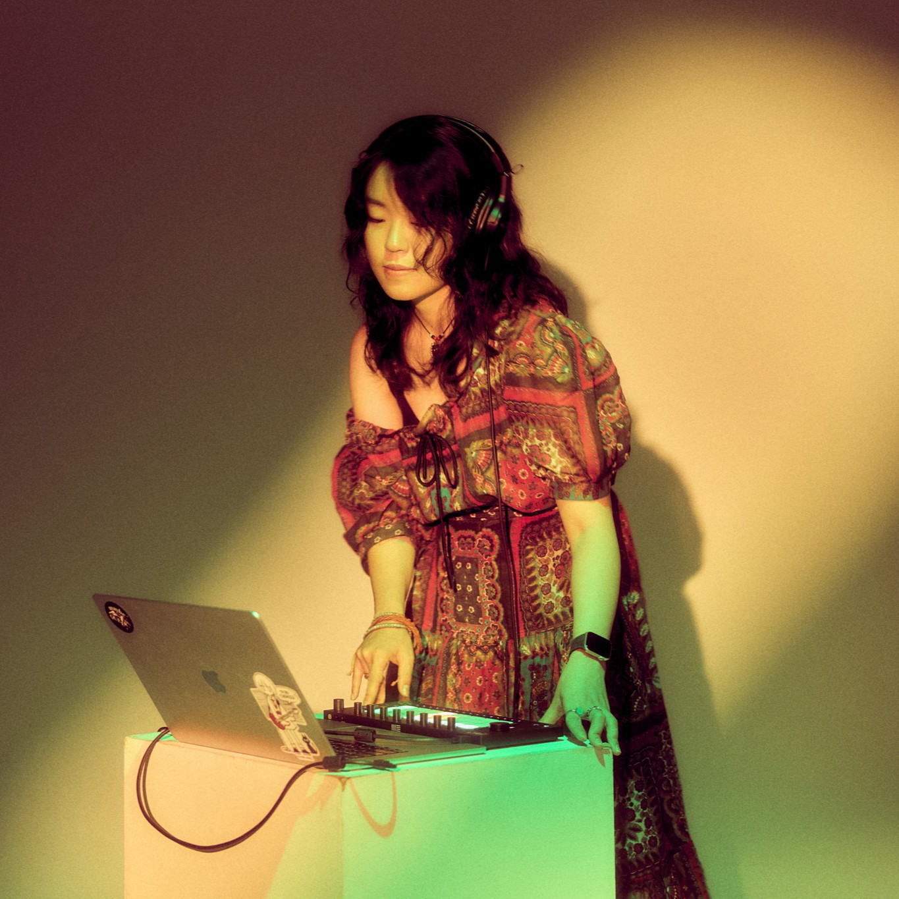
Kylie Oh
Kylie Oh (b. 1996, Seoul) is a sound artist based in Cologne, working in experimental electronic and computer music. Her practice centers on immersive, spatial listening experiences that build collective memory and explore ecological and democratic relationships across diverse identities. Recent work includes Lady Lazarus Underwater (2025), premiered as a radio piece at Radiophrenia, Glasgow in September 2026, and a live electronic set in Cologne (2026). She grew up on 1980s Japanese science-fiction anime and the novels of Asimov, Adams and Octavia Butler.
From Earth to Earth
From Earth to Earth is a live sound composition inspired by 1980s Japanese SF manga and anime, inviting the listener into an experience of ""listening together with the Earth."" The live set proposes listening as part of the Earth's environment, departing from a hyper-capitalist sensory system to resonate with other beings as a part of the Earthian ecosystem. The composition uses four kinds of field-recording media: field-recording sources capturing urban noise, a generative audio neural network model (RAVE by IRCAM) trained on a dataset of urban noise that the performer collected herself in various cities, ground field-recording sources collected through various surfaces using a geophone, and a live field-recording feedback loop that records and transmits the surface vibrations through a geophone installed on-site.
WORKSHOPS
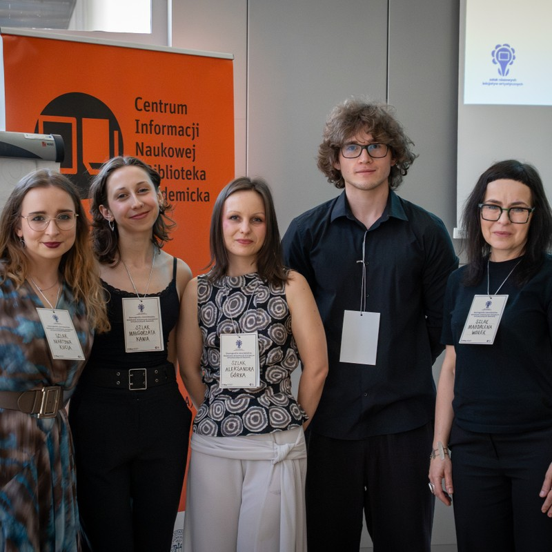
Kartografie niewidzialne
A team working on a project dedicated to niche artistic initiatives in Katowice conducted field research and interviewed people involved in creating these spaces. Based on their findings, the team developed a guide to the city’s independent art spaces. It presents places operating outside the mainstream institutional circuit, highlighting their diversity, ways of working, and importance to local communities. During the Chodź na Plac event, the team held public consultations on the visibility of these spaces among residents.
Szlakiem oddolnych przestrzeni artystycznych — lokalna sztuka w dobie cyfryzacji
Can art bring together people who are not involved in the art world? Can grassroots initiatives survive in today’s world of consumerism and large corporations? How do technology and new media affect their functioning – do they help these initiatives gain visibility, or do they create invisible barriers? We will explore these and other questions during a workshop on 8 November, organised by the team behind the project Invisible Cartographies. Following the Trail of Katowice's Niche Art Spaces. In the first part, we will present the findings of our research, before inviting participants to create their own vision of an ideal “third place” – a space that fosters encounters, creativity and the building of relationships. Together, we will reflect on the needs such spaces can fulfil and how they contribute to the development of local communities.
SCREENINGS
Monika Masłoń
Monika Masłoń jest artystką działającą na styku kina eksperymentalnego i mediów cyfrowych. Ukończyła Akademię Sztuk Pięknych i uzyskała stopień doktora w Łódzkiej Szkole Filmowej. W swojej twórczości skupia się na ucieleśnionych spotkaniach, intersubiektywnej obecności i zapośredniczonej intymności, przekładając stany emocjonalne na formy audiowizualne i immersyjne, w tym film, rzeczywistość wirtualną (VR) oraz instalacje. Jest autorką filmu dokumentalnego „Four Percent”, nakręconego w całości w środowisku VRChat, oraz doświadczenia VR „Control Negative”.
4%
Four Percent bada doświadczenie spotkania w wirtualnej rzeczywistości i wciąż zmieniające się formy międzyludzkiego kontaktu. Poprzez intymne zapisy cyfrowych spotkań film przygląda się poczuciu obecności w świecie, w którym ciała są nieobecne, ale bliskość wydaje się realna. Analizuje wyobrażony dotyk, to, jak poprzez gesty awatarów, wygenerowaną współobecność i bliskość czyjegoś głosu wypełnia się luka pozostawiona przez brak fizycznego kontaktu. Nakręcony w całości wewnątrz VRChat, Four Percent oddaje napięcie między dystansem a bliskością, stawiając pytanie o cielesność, realność doświadczenia i więź w coraz bardziej zapośredniczonym cyfrowo świecie.
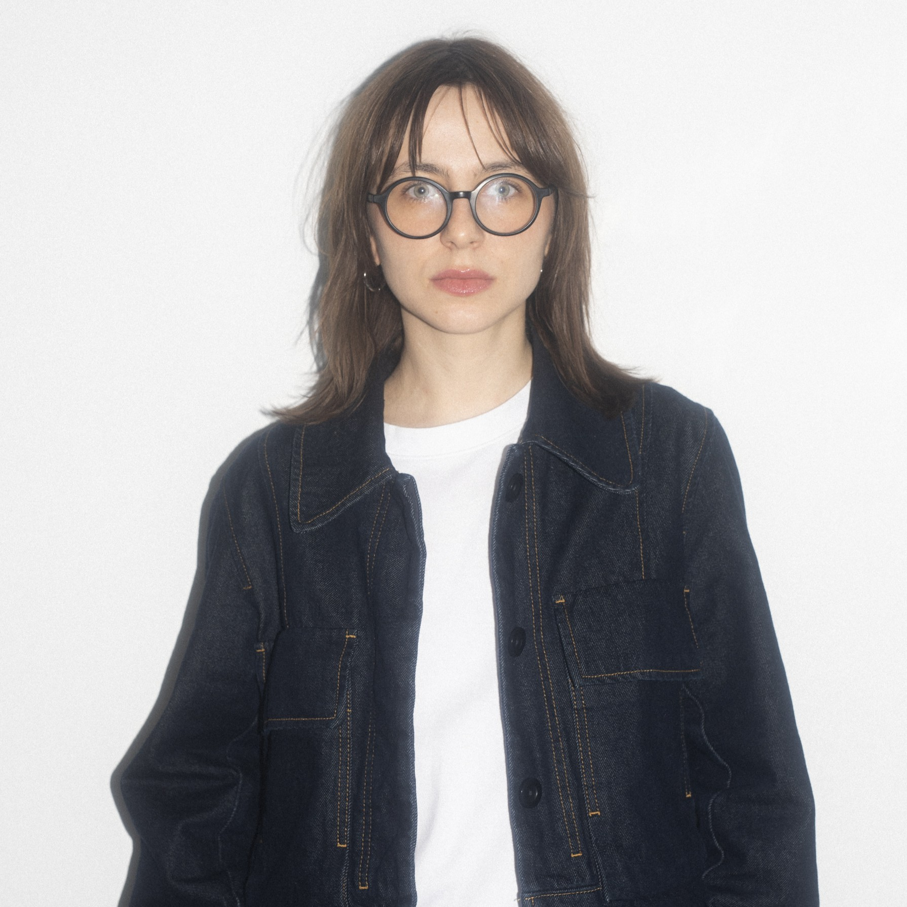
Anastazja Naumenko
Anastazja Naumenko is a visual artist and director, whose main investigation focuses on intertwinement and co-relations between real and fictional worlds, hence most of their works are a mix of documentary and fiction. They are currently studying at die Angewandte in Vienna, Transarts department. Their first film “We hope you won’t need to come back” was shown at more than 25 festivals around the world.
Czy Ty mnie słyszysz?
Nastia, who has lived abroad for many years, begins to teach her mother how to use Internet services. Different perceptions of technology become the starting point for exposing intergenerational conflicts and long-forgotten family threads. The complicated navigation of social media reflects a no less difficult path to communicate. While learning, the heroines learn a lot about each other, but will the intimacy regained by Zoom be defining for the further relationship between the two adult women?
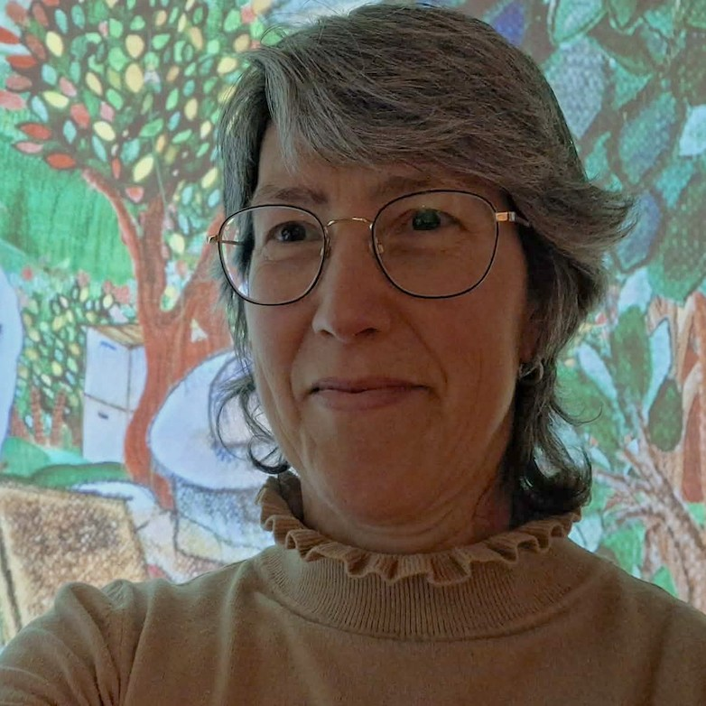
Simone Hooymans
Simone Hooymans (b. 1974, Netherlands) is a visual artist and animator based in Norway. Working with hand-drawn watercolour and pencil drawings combined with digital animation, she creates immersive and elusive worlds where landscapes and living forms constantly transform. Her work explores the fragile relationship between humans and nature, touching on environmental crisis, transformation and the mysteries of the natural world. Her animations and video installations have been presented internationally in exhibitions and film festivals.
The Perpetual Tapestry
The Perpetual Tapestry is an experimental animation about a collapsing world in transformation, where everything is tied together by the threads in a woven tapestry.
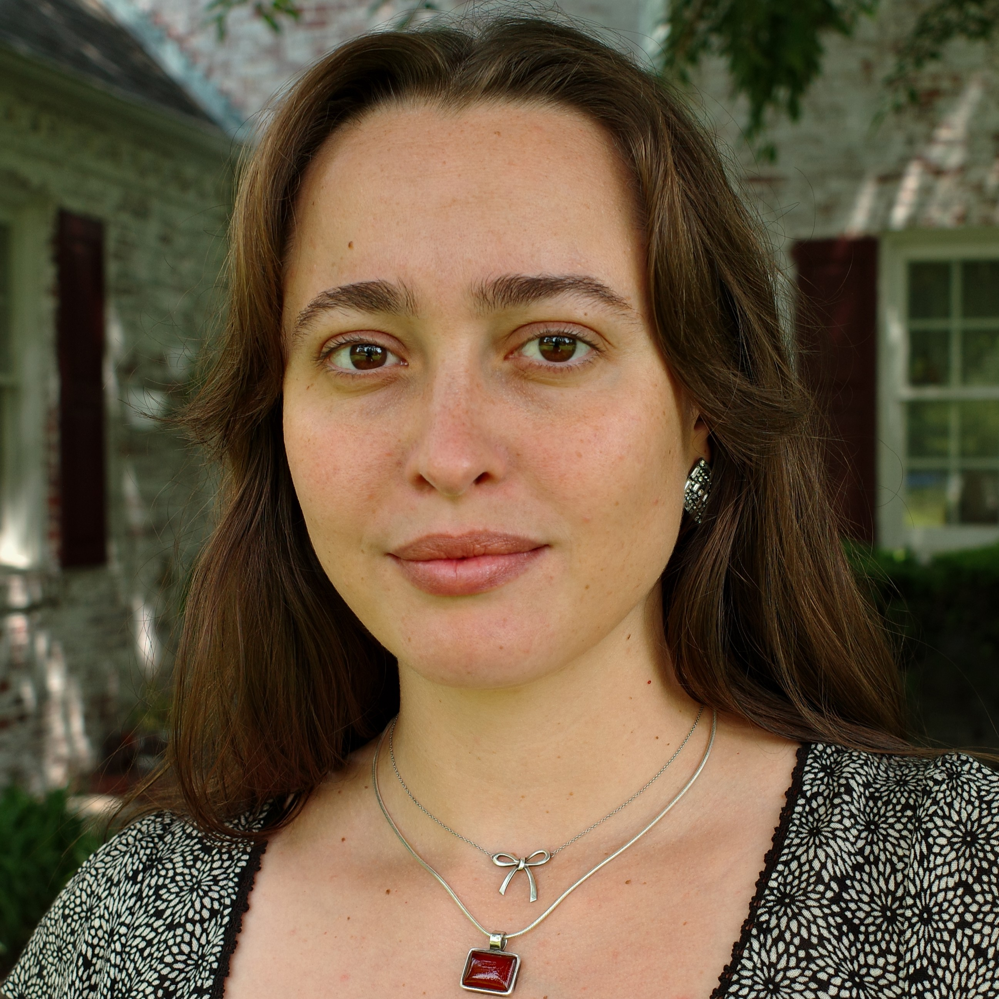
Amandine Thomas
Amandine Thomas is a French-American writer, director and editor. As a multi-hyphenate filmmaker, her work spans across genres and formats. She created a short film trilogy called the Expectations Trilogy with her creative collaborator Gerardo Coello Escalante, of which each film premiered at Sundance Film Festival for three consecutive years.
hello beautiful please follow back
Her grandmother's relationship with an online romance scammer leads to a filmmaker's exploration into the ways in which we strive to connect through the internet.
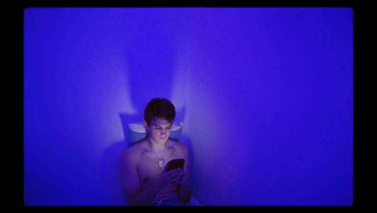
Gala Hernández López
+10k